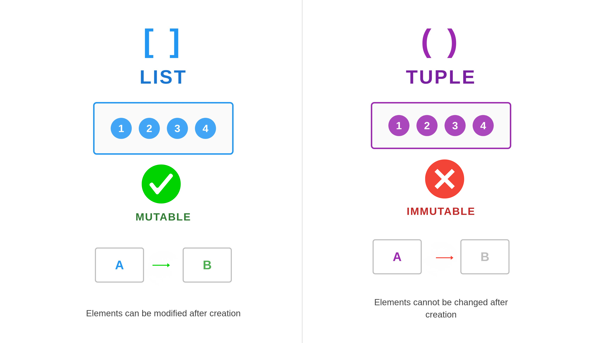

Chapter 1: Lists and Tuples#
1. Introduction#
In precision health, we constantly work with sequences of information, from a patient’s vital signs over time to a fixed protocol for a lab test. This section introduces two essential Python data structures for this task: lists and tuples. You will learn how to use mutable lists for data that needs to change, like a patient’s medication list, and immutable tuples for data that must remain constant, like a genetic reference code. Mastering these structures is the first step toward building robust and reliable health data applications.
Key Terms: Mutable: An object that can be changed after it is created. Lists
[]are mutable. Immutable: An object that cannot be changed after it is created. Tuples()are immutable.
In Practice: Think of a mutable list as a patient’s ongoing medication chart, which is updated frequently. An immutable tuple is like a patient’s date of birth or medical record number (MRN)—a piece of data that is fixed and should never change.
2. Key Concepts and Definitions#
List: A mutable (changeable), ordered collection of items enclosed in square brackets
[]. In a clinical setting, lists are perfect for managing dynamic data, such as a patient’s hourly vital signs or a list of active medications that can be updated.Tuple: An immutable (unchangeable), ordered collection of items enclosed in parentheses
(). Tuples are used to store data that should not be altered after creation, providing data integrity. A medical analogy is a finalized lab report’s header, containing the patient ID, test code, and collection date, which must not be accidentally changed.Index: The numerical position of an element in a sequence, starting from zero. For example, in a list of vitals
[120, 80, 98], the systolic pressure120is at index0.Slicing: A technique to extract a portion of a sequence (a “slice”) by specifying a start and end index. This is useful for isolating specific data ranges, like extracting blood pressure readings from a longer list of vitals.
Unpacking: A convenient way to assign the elements of a list or tuple to multiple variables in a single statement. This improves code readability by giving descriptive names to individual data points.
Reflection: Can you think of any other examples where it would be beneficial to use lists or tuples?

3. Main Content#
3.1 Working with Lists: The Dynamic Data Container#
Creating and Accessing List Elements Lists can hold items of different data types. While this is a powerful feature, in clinical data management it is often better practice to group data of the same type or use more advanced structures like dictionaries to avoid errors.
# Vitals: Name, Temp(°C), HR(bpm), BP_Sys(mmHg), BP_Dia(mmHg)
patient_vitals = ['John Doe', 37.2, 88, 120, 80]
print(patient_vitals[0]) # Access the first element (patient's name)
# Output: John Doe
Try it yourself: Modify the code above or write your own version
# TODO: Write your code here
# Hint: Try modifying the example above
Accessing Elements from the End (Negative Indexing)
Negative indices (-1, -2) access elements from the end of the sequence, which is useful for getting the most recent data point.
# Access the last vital sign recorded
last_vital = patient_vitals[-1]
print(last_vital)
# Output: 80
Try it yourself: Modify the code above or write your own version
# TODO: Write your code here
# Hint: Try modifying the example above
Modifying List Elements Because lists are mutable, you can update elements directly by their index.
# The patient's heart rate changes.
patient_vitals = ['John Doe', 37.2, 88, 120, 80]
patient_vitals[2] = 105
print(patient_vitals)
# Output: ['John Doe', 37.2, 105, 120, 80]
Try it yourself: Modify the code above or write your own version
# TODO: Write your code here
# Hint: Try modifying the example above
Adding Elements to a List
medication_list = ['aspirin', 'metformin']
medication_list.append('lisinopril') # Adds to the end
medication_list.insert(1, 'atorvastatin') # Adds at index 0
print(medication_list)
# Output: ['aspirin', 'atorvastatin', 'metformin', 'lisinopril']
Try it yourself: Modify the code above or write your own version
# TODO: Write your code here
# Hint: Try modifying the example above
Pro Tip: Use
.append()for chronological additions, like adding a new patient to the end of a queue. Use.insert()when the specific position is critical, such as adding a high-priority medication to the beginning of a treatment protocol.
Removing Elements
# Manage a medication list
medication_list = ['atorvastatin', 'aspirin', 'metformin', 'lisinopril']
medication_list.remove('aspirin') # Removes 'aspirin' by its value
processed_med = medication_list.pop(0) # Removes 'atorvastatin' by index and returns it
print(f"Processed: {processed_med}")
# Output: Processed: atorvastatin
del medication_list[0] # Removes 'metformin' by index without returning it
print(f"Final list: {medication_list}")
# Output: Final list: ['lisinopril']
Try it yourself: Modify the code above or write your own version
# TODO: Write your code here
# Hint: Try modifying the example above
Reflection Moment: When managing a list of patient allergies, would you be more likely to use
.remove('penicillin')ordel allergy_list[2]? Why is removing by value often safer and more readable in a clinical context?
Checking for Membership and Finding Position
medication_list = ['lisinopril', 'metformin']
drug_to_find = 'lisinopril'
# Check for existence first
if drug_to_find in medication_list:
position = medication_list.index(drug_to_find)
print(f"{drug_to_find} is at index {position}.")
# Output: lisinopril is at index 0.
Try it yourself: Modify the code above or write your own version
# TODO: Write your code here
# Hint: Try modifying the example above
Important: Always check if an item is
ina list before using.index(). If the item is not found,.index()will raise aValueErrorand crash the script. This pre-check is a crucial defensive programming habit.
Nested Lists for Tabular Data
# Each inner list contains [Patient_ID, Age (years), HR (bpm)]
patient_cohort = [
['PT001', 68, 72],
['PT002', 45, 95],
['PT003', 76, 68]
]
patient_2_hr = patient_cohort[1][2] # Access HR of the second patient
print(patient_2_hr)
# Output: 95
Try it yourself: Modify the code above or write your own version
# TODO: Write your code here
# Hint: Try modifying the example above
In Practice: Nested lists are a fundamental way to structure tabular data. This structure is the conceptual basis for powerful data analysis libraries like Pandas, where you will manage large patient cohorts in a format called a DataFrame, which functions like a sophisticated version of a nested list.
3.2 Working with Tuples: The Immutable Data Record#
Creating and Accessing Tuples
# Info: Test Code, Full Name, Department
lab_test_info = ('CBC', 'Complete Blood Count', 'Hematology')
print(lab_test_info[1])
# Output: Complete Blood Count
Try it yourself: Modify the code above or write your own version
# TODO: Write your code here
# Hint: Try modifying the example above
Debug Note: Forgetting the trailing comma in a single-element tuple is a frequent error.
('BRCA1')is evaluated as a simple string inside parentheses, not a tuple. The comma,('BRCA1',), is what defines it as a tuple.
Immutability and Unpacking
Attempting to modify a tuple raises a TypeError. Unpacking assigns elements to variables, improving readability.
lab_test_info = ('CBC', 'Complete Blood Count', 'Hematology')
# The following line will cause a TypeError: lab_test_info[0] = 'CMP'
# Unpacking assigns tuple elements to clear, readable variables.
test_code, full_name, department = lab_test_info
print(full_name)
# Output: Complete Blood Count
Try it yourself: Modify the code above or write your own version
# TODO: Write your code here
# Hint: Try modifying the example above
3.3 Common Operations: Slicing, Concatenation, and Repetition#
Slicing [start:end:step] extracts a portion into a new sequence.
# Vitals: Name, Temp(°C), HR(bpm), BP_Sys(mmHg), BP_Dia(mmHg)
patient_vitals = ['John Doe', 37.2, 105, 120, 80]
# Extract BP readings from a list
bp_readings = patient_vitals[3:5] # Extracts from index 3 up to (not including) 5
print(bp_readings)
# Output: [120, 80]
Try it yourself: Modify the code above or write your own version
# TODO: Write your code here
# Hint: Try modifying the example above
Pro Tip: You can quickly create a copy of a list using a full slice:
new_vitals = patient_vitals[:]. This is useful when you want to modify a list while preserving the original version for comparison or record-keeping.
Concatenation (+) and repetition (*) create new sequences.
primary_meds = ['lisinopril']
secondary_meds = ['aspirin', 'metformin']
# Concatenation (+) creates a new list
all_meds = primary_meds + secondary_meds
print(all_meds)
# Output: ['lisinopril', 'aspirin', 'metformin']
# Repetition (*) creates a new list with repeated items
initial_doses = [0] * 3
print(initial_doses)
# Output: [0, 0, 0]
Try it yourself: Modify the code above or write your own version
# TODO: Write your code here
# Hint: Try modifying the example above
4. Practice Exercises#
Exercise 1: Manage a Patient Queue**#
Objective: Practice adding elements to a list using .append().
Time: 3 minutes
Medical Context: As a triage nurse, you are managing a digital patient queue. A new patient arrives and must be added to the end of the line.
Create a list named patient_queue with three patient ID strings: 'PT001', 'PT002', and 'PT003'. A new patient, 'PT004', arrives. Add them to the end of the queue and print the final list.
📝 Your Solution:
# TODO: Write your solution here
# Hint: Check the task description above
🔍 Click to reveal solution
Solution
patient_queue = ['PT001', 'PT002', 'PT003']
patient_queue.append('PT004')
print(patient_queue)
# Expected Output: ['PT001', 'PT002', 'PT003', 'PT004']
Explanation: The .append() method adds an item to the end of a list, which is an efficient way to manage a first-in, first-out queue.
Key Learning: Using .append() to add an element to the end of a list.
Exercise 2: Update Patient Vitals**#
Objective: Practice modifying an element in a list by its index. Time: 4 minutes Medical Context: You are monitoring a patient’s vitals. A new reading shows the temperature has risen, and the record must be updated.
You are given the list vitals = [37.0, 90, 120, 80] which represents [Temp(°C), HR(bpm), BP_Sys(mmHg), BP_Dia(mmHg)]. A new reading shows the temperature is now 37.3. Update the list to reflect this change and print the modified list.
📝 Your Solution:
# TODO: Write your solution here
# Hint: Check the task description above
🔍 Click to reveal solution
Solution
# [Temp(°C), HR(bpm), BP_Sys(mmHg), BP_Dia(mmHg)]
vitals = [37.0, 90, 120, 80]
vitals[0] = 37.3 # Temperature is at index 0
print(vitals)
# Expected Output: [37.3, 90, 120, 80]
Explanation: Lists are mutable, so we can directly reassign the value at a specific index. We identified that temperature is at index 0 and updated its value.
Key Learning: Modifying a list element using its index after identifying the correct position.
Exercise 3: Medication Protocol Management**#
Objective: Integrate the use of tuples (for fixed data) and lists (for dynamic data), and practice unpacking, adding, and removing elements. Time: 5 minutes Medical Context: A medication protocol has a fixed identifier and name (a tuple) but a list of approved dosages that can be updated by a clinical review board (a list).
Write a Python script that performs the following actions:
Define a tuple
PROTOCOL_INFOcontaining('T-123', 'ibuprofen', 200).Define a list
approved_dosages_mgcontaining[200, 400, 600].Unpack
PROTOCOL_INFOinto three variables, then print only the drug name.Add a newly approved dosage of
800to theapproved_dosages_mglist.Remove the
200mg dosage fromapproved_dosages_mgas it is being phased out.Print the final, modified
approved_dosages_mglist.
📝 Your Solution:
# TODO: Write your solution here
# Hint: Check the task description above
🔍 Click to reveal solution
Solution
# 1. Define the immutable protocol information as a constant
PROTOCOL_INFO = ('T-123', 'ibuprofen', 200)
# 2. Define the mutable list of dosages
approved_dosages_mg = [200, 400, 600]
# 3. Unpack the tuple and print the drug name
protocol_id, drug_name, standard_dose = PROTOCOL_INFO
print(f"Drug Name: {drug_name}")
# 4. Add the new dosage
approved_dosages_mg.append(800)
# 5. Remove the old dosage
approved_dosages_mg.remove(200)
# 6. Print the final list
print(f"Final Approved Dosages: {approved_dosages_mg}")
# Expected Output:
# Drug Name: ibuprofen
# Final Approved Dosages: [400, 600, 800]
Explanation: This script correctly uses a tuple for the fixed protocol data and a list for the dynamic dosage data. Unpacking makes the code readable, while .append() and .remove() modify the list as required by the clinical update.
Key Learning: Using lists and tuples together to model real-world scenarios with both fixed and dynamic data.
5. Practical Applications#
Managing Patient Medication Lists: A patient’s active medications can be stored in a list. The programming technique involves using
.append()to add new prescriptions and.remove()to discontinue them. The real-world impact is an accurate, up-to-date medication record, which is critical for preventing adverse drug interactions.Storing Genomic Sequence Identifiers: A specific gene panel might test for a fixed set of genetic markers (e.g., ‘BRCA1’, ‘BRCA2’, ‘TP53’). This data can be stored in a tuple. The programming technique is to define a tuple to ensure this reference set is immutable and cannot be accidentally altered during analysis. The real-world impact is data integrity in genetic testing pipelines, ensuring analyses are run against the correct, validated set of markers.
Processing Lab Sample Queues: A laboratory information system can use a list to manage a queue of incoming patient samples. The programming technique involves using
.append()to add a new sample to the end of the queue and.pop(0)to retrieve and process the first sample in line. The real-world impact is a systematic, first-in-first-out processing of samples, ensuring fairness and traceability in the lab workflow.Representing Clinical Trial Cohorts: A nested list can represent a cohort of patients in a clinical trial, where each inner list contains a patient’s data (
['PatientID', age, treatment_group]). The programming technique is to access specific patient data using double indexing (e.g.,cohort[5][2]to get the treatment group of the sixth patient). The real-world impact is the ability to programmatically analyze and segment patient data to evaluate trial outcomes.
6. Summary and Key Takeaways#
In this section, we’ve explored Python’s fundamental sequence types: lists and tuples. We learned how their core difference—mutability versus immutability—dictates their use in precision health applications, from managing dynamic patient data to safeguarding fixed clinical protocols.
Lists
[]are for dynamic data: They are ideal for collections of data that need to change, such as patient queues or medication lists. You can add, remove, and modify elements after creation.Tuples
()are for static data: They are used for data that must not change, ensuring data integrity for things like configuration settings, patient identifiers, or fixed lab test codes.Common Operations: Both lists and tuples can be accessed by index, sliced to create sub-sequences, and unpacked for readability.
Practicality in Health: Lists provide flexibility for dynamic clinical data, while tuples provide safety for static, critical information. Choosing the right one is key to writing safe and effective code.
With a solid understanding of lists and tuples, you are now equipped to handle a wide variety of ordered data. Next, we will explore dictionaries, a powerful tool for managing data in key-value pairs, which is essential for creating more complex and descriptive patient records.